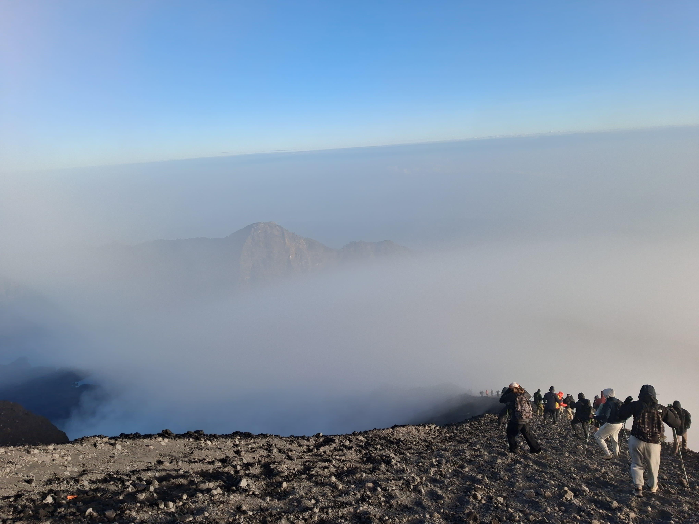

Package Overview
Short on time but eager to stand on top of Indonesia's second highest volcano?
This 2 Days 1 Night package via Sembalun is custom-designed for fit trekkers and experienced hikers seeking an intensive fast-track route to the Summit (3,726m) without camping down by the lake.
Supported by our Professional Guides and Porters, your safety, hot mountain meals, camping gear, and permits are handled from start to finish.
- Start Point: Sembalun Village (1,156m)
- Finish Point: Sembalun Village (1,156m)
- Max Altitude: 3,726m (The Summit)
- Level: Demanding / Advanced
Detailed Itinerary
Day 0 Arrival Day & Briefing
Highlight: Pick-up and mountain briefing.
- Pick-up from Lombok Airport, Mataram, Senggigi, or Kuta Lombok.
- Transfer to your accommodation in Sembalun or Senaru.
- Meet your mountain guide for trip orientation and gear checking.
Day 1 Sembalun Village – Sembalun Crater Rim
Highlight: Savanna Grassland & Bukit Penyesalan (Hills of Regret).
- 06:00 – 08:00 AM: Breakfast, check-out, and registration at Rinjani Information Center (RIC) Sembalun (1,100m).
- 08:00 AM – 12:00 PM: Trek through wide-open grasslands to Pos 1 (1,300m) and Pos 2 (1,500m); lunch at Pos 3 (1,800m).
- 13:00 – 16:30 PM: Steep ascent tackling the famous 7 Hills of Regret to Sembalun Crater Rim (2,639m).
- 17:00 PM: Camp setup, sunset over Segara Anak Lake, warm dinner, and early rest.
- Meals: Lunch, Dinner.
Day 2 Summit Attack (3,726m) – Sembalun Village
Highlight: Golden Sunrise on top of Mt. Rinjani.
- 02:00 AM: Wake-up call, hot tea/coffee, and light snacks.
- 02:30 AM: Midnight summit push along volcanic sand ridges.
- 06:00 AM: REACH RINJANI SUMMIT (3,726m)! Witness the sunrise with views across Bali and Sumbawa.
- 07:30 – 09:30 AM: Descend back to Camp 1 for a celebratory warm breakfast and packing.
- 10:00 AM – 15:00 PM: Hike down back to Sembalun Village (lunch provided at Pos 2).
- 15:30 PM: Transport pickup and direct drop-off to your next destination in Lombok.
- Meals: Breakfast, Lunch.
What is Included?
- Professional Guide: Licensed, English-speaking, and summit experienced.
- Porter Service: Carrying all logistics, campsite gear, water, and food.
- Meals & Drinks: Warm nutritious mountain meals, fresh fruits, coffee/tea, mineral water.
- Camping Equipment: Quality double-layer tent, warm sleeping bag, mattress, toilet tent.
- National Park Entrance Ticket & Insurance.
- Private Pick-up & Drop-off Transport across Lombok.
- 1-night accommodation before the trek.
What is Excluded?
- Personal Porter (to carry your personal daypack).
- Tipping for Guide & Porters.
- Personal trekking equipment (Shoes, warm down jacket, headlamp, poles).
- Flight / Fast boat tickets.
Frequently Asked Questions
Is this 2D1N summit trek suitable for beginners?
It requires above-average fitness and endurance due to rapid elevation gain (+2,600m in 24 hours). If you prefer a more balanced pace, choose the 3D2N package.